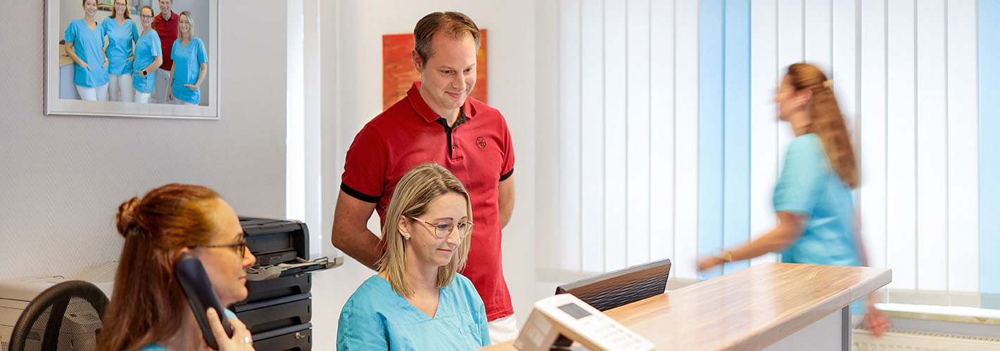
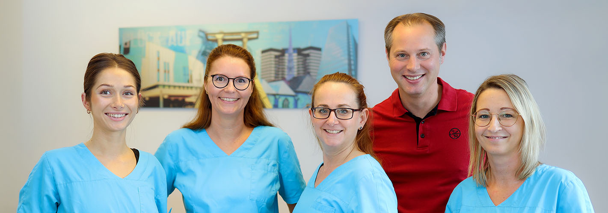

Vorsorge & Krebsscreening
Check-up 35, Hautkrebsscreening und Krebsvorsorgeuntersuchungen für Männer und Frauen aller Altersgruppen.
Urlaub: Unsere Praxis bleibt vom 17.08. – 28.08.2026 geschlossen. Vertretung: MVZ Karnap (Dr. Rust & Dr. Hansen).
Persönliche, gründliche hausärztliche Versorgung für die ganze Familie — von der Vorsorge über moderne Diagnostik bis zum Hausbesuch, mitten in Essen-Karnap.
Dr. med. Christoph Bornemann Facharzt für Allgemeinmedizin · Knappschaftsarzt
Notfall & Kontakt
0201 381418
Bereitschaftsdienst: 116 117
So finden Sie uns
Karnaper Str. 99
45329 Essen-Karnap
Sprechzeiten
Mo · Di · Do 7–11 · 14:30–17 Uhr
Mi · Fr 7–11 Uhr
Leistungsspektrum
Von der jährlichen Vorsorge bis zur Betreuung chronischer Erkrankungen: Wir begleiten Sie mit moderner Diagnostik und viel Erfahrung.
Check-up 35, Hautkrebsscreening und Krebsvorsorgeuntersuchungen für Männer und Frauen aller Altersgruppen.
Individuelle Impfberatung und Durchführung aller empfohlenen Schutzimpfungen nach STIKO-Empfehlungen.
Ruhe-EKG, Belastungs-EKG und umfassende Herz-Kreislauf-Diagnostik direkt in der Praxis.
Langzeit-Blutdruckmessung über 24 Stunden für präzise Diagnostik und optimale Therapieeinstellung.
Ultraschalluntersuchungen und umfassende Labordiagnostik mit schnellen Ergebnissen direkt in der Praxis.
Wir kommen zu Ihnen — Hausbesuche und Versorgung im Evangelischen Altenzentrum am Emscherpark in Essen-Karnap.
Disease-Management-Programme für Asthma, COPD, koronare Herzkrankheit und Diabetes mellitus Typ II.
Umfassende geriatrische Versorgung älterer Patientinnen und Patienten mit individueller, einfühlsamer Betreuung.
Lungenfunktionsprüfung sowie Notfallbehandlung mit schneller Labordiagnostik — auch Unfall-Nachversorgung.


Unsere Praxis
Mitten in Essen-Karnap, an der Karnaper Straße 99, ist unsere Praxis seit Jahren die erste Anlaufstelle für die medizinische Versorgung im Stadtteil — von der akuten Erkältung bis zur langjährigen Begleitung chronischer Erkrankungen.
Damit Sie möglichst wenig warten, bitten wir Sie, Termine vorab telefonisch zu vereinbaren. Rezepte und Überweisungen können Sie ebenfalls bequem vorbestellen und am Folgetag abholen.
Praxis-Service
Vereinbaren Sie Ihren Termin online oder bestellen Sie Rezepte und Überweisungen vor — fertig ausgestellt liegen sie am Folgetag für Sie in der Praxis bereit.
Wählen Sie im Online-Kalender einen freien Termin — oder rufen Sie uns einfach an. Spontane Besuche sind bei akuten Beschwerden jederzeit möglich.
Telefonisch: 0201 381418Der Online-Kalender wird von unserem Dienstleister DGN Service GmbH (docvisit) bereitgestellt. Beim Laden werden Daten an den Anbieter übertragen.
Es gilt die Datenschutzerklärung der DGN.
Unser Team
Unser eingespieltes Team aus Medizinischen Fachangestellten ist in den DMP-Chronikerprogrammen geschult und nimmt sich Zeit für Ihr Anliegen.
Dr. med. Christoph Bornemann
Facharzt für Allgemeinmedizin, Knappschaftsarzt
Christina Kempf
MFA, entlastende Versorgungsassistentin, Fachwirtin für ambulante medizinische Versorgung
Nicole Marasus
MFA, entlastende Versorgungsassistentin
Jenny Discher
Medizinische Fachangestellte
Lara Zupp
Medizinische Fachangestellte · derzeit in Elternzeit
Elena Dähn
Medizinische Fachangestellte
Das sagen unsere Patienten
Vertrauen, das von unseren Patientinnen und Patienten kommt.
„Dr. Bornemann und sein Team sind für mich mit Abstand die beste Praxis weit und breit. Man fühlt sich vom ersten Moment an ernst genommen und hervorragend betreut. Er nimmt sich Zeit, hört aufmerksam zu und erklärt alles verständlich.“
„Als Neupatient habe ich mich kurzfristig und kurz vor Praxisschluss telefonisch gemeldet. Trotz der späten Stunde wurde ich nach kurzer Wartezeit behandelt. Ein äußerst freundlicher, kompetenter Arzt. Absolut empfehlenswert!“
„Der beste Arzt überhaupt. Wenn ich könnte, würde ich mehr Sterne geben. Die Damen am Empfang super nett und der Arzt selbst ist sehr nett und ruhig, nimmt sich viel Zeit und ist zu 1000 % kompetent.“
„Einfach eine gute Praxis mit einem spitzenmäßigen Arzt und einem freundlichen Team. Der Notfall mit dem Hexenschuss wurde unkompliziert und schnell behandelt. Die Praxis ist modern ausgestattet.“
„Einfach ein toller Arzt, der sich Zeit für seine Patient*innen nimmt und darauf schaut, was sie wirklich brauchen. Auch an schwierigere Fälle traut er sich ran. Auch die Arzthelferinnen sind große Klasse.“
„Ein einzigartiger Arzt! Dr. Bornemann ist äußerst empathisch, nimmt sich stets viel Zeit, hört zu, erklärt gut. Sein gesamtes Team ist top! Alle sind freundlich und hilfsbereit.“
„Dr. Bornemann ist super freundlich, geduldig und empathisch (sogar montagmorgens). Selten einen Arzt kennengelernt, der so freundlich ist und seinen Patienten wirklich zuhört.“
„Ohne Frage der freundlichste Arzt, mit dem ich je zu tun hatte. Jeder in der Praxis ist echt freundlich und nimmt sich Zeit für einen. Der Doktor hört einem richtig zu, egal wie oft man da ist.“
Kontakt & Anfahrt
Hausarztpraxis Dr. med. Bornemann
Karnaper Str. 99 · 45329 Essen
Fax: 0201 383530
kontakt@arztpraxis-bornemann.de
Jetzt anrufen0201 381418Sprechzeiten
| Montag | 7:00 – 11:00 · 14:30 – 17:00 Uhr |
| Dienstag | 7:00 – 11:00 · 14:30 – 17:00 Uhr |
| Mittwoch | 7:00 – 11:00 Uhr |
| Donnerstag | 7:00 – 11:00 · 14:30 – 17:00 Uhr |
| Freitag | 7:00 – 11:00 Uhr |
Außerhalb der Sprechzeiten wenden Sie sich bitte an den ärztlichen Bereitschaftsdienst unter 116 117.
Anfahrt
Route planen